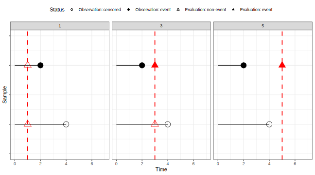
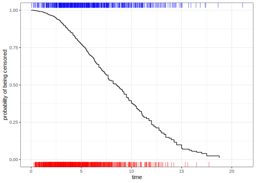

library(tidymodels)
library(censored)
#> Loading required package: survival
library(prodlim)
set.seed(5882)
sim_dat <- SimSurv(2000) %>%
mutate(event_time = Surv(time, event)) %>%
select(event_time, X1, X2)
set.seed(2)
split <- initial_split(sim_dat)
sim_tr <- training(split)
sim_val <- testing(split)Accounting for Censoring in Performance Metrics for Event Time Data
statistical analysis
survival analysis
Learn how tidymodels uses causal inference tools to measure performance of survival models.
Introduction
To use code in this article, you will need to install the following packages: censored, prodlim, and tidymodels.
One trend in modern survival analysis is to compute time-dependent measures of performance. These are primarily driven by an increased focus on predictions for the probability of survival at a given time (as opposed to the predictions of event times or linear predictors). Since these are conditional on the time of evaluation, we call them dynamic performance metrics.
Many dynamic metrics are similar to those used for binary classification models. Examples include the Brier score and ROC curves (see the Dynamic Performance Metrics for Event Time Data article for details). The basic idea is that, for a given time \(t\) for model evaluation, we try to encode the observed event time data into a binary “has there been an event at time \(t\)?” version. We also convert the predicted survival probabilities into predicted events/non-events based on a threshold (default is 0.50). The survival versions of these metrics need those binary versions of observed truth and predictions as well as a way to account for censoring.
Censoring plays into the details of the conversion and is additionally captured in the form of weights. This article covers both those aspects in detail to complement the main article on performance metrics for event time data.
To start, let’s define the various types of times that will be mentioned:
- Observed time: time recorded in the data
- Event time: observed times for actual events
- Evaluation time: the time, specified by the analyst, that the model is evaluated.
Example data
As an example, we’ll simulate some data with the prodlim package, using the methods of Bender et al (2005). A training and a validation set are simulated. We’ll also load the censored package so that we can fit a model to these time-to-event data:
We’ll need a model to illustrate the code and concepts. Let’s fit a bagged survival tree model to the training set:
set.seed(17)
bag_tree_fit <-
bag_tree() %>%
set_mode("censored regression") %>%
set_engine("rpart") %>%
fit(event_time ~ ., data = sim_tr)
bag_tree_fit
#> parsnip model object
#>
#>
#> Bagging survival trees with 25 bootstrap replications
#>
#> Call: bagging.data.frame(formula = event_time ~ ., data = data)Using this model, we can make predictions of different types and augment() provides us with a version of the data augmented with the various predictions. Here we are interested in the predicted probability of survival at different evaluation time points. The largest event time in the training set is 21.083 so we will use a set of evaluation times between zero and 21.
time_points <- seq(0, 21, by = 0.25)
val_pred <- augment(bag_tree_fit, sim_val, eval_time = time_points)
val_pred
#> # A tibble: 500 × 5
#> .pred .pred_time event_time X1 X2
#> <list> <dbl> <Surv> <dbl> <dbl>
#> 1 <tibble [85 × 5]> 6.66 4.831957 1 -0.630
#> 2 <tibble [85 × 5]> 6.66 6.110031 1 -0.606
#> 3 <tibble [85 × 5]> 7.47 6.597774+ 1 -1.03
#> 4 <tibble [85 × 5]> 3.29 2.717484 1 0.811
#> 5 <tibble [85 × 5]> 5.10 4.727042+ 1 -0.376
#> 6 <tibble [85 × 5]> 4.99 8.699061 0 1.18
#> 7 <tibble [85 × 5]> 7.23 10.818670 1 -0.851
#> 8 <tibble [85 × 5]> 6.46 6.886378 0 0.493
#> 9 <tibble [85 × 5]> 4.75 2.451893+ 1 0.0207
#> 10 <tibble [85 × 5]> 13.4 8.231911+ 0 -1.52
#> # ℹ 490 more rowsThe observed data are in the event_time column. The predicted survival probabilities are in the .pred column. This is a list column with a data frame for each observation, containing the predictions at the 85 evaluation time points in the (nested) column .pred_survival.
val_pred$.pred[[1]]
#> # A tibble: 85 × 5
#> .eval_time .pred_survival .weight_time .pred_censored .weight_censored
#> <dbl> <dbl> <dbl> <dbl> <dbl>
#> 1 0 1 0 1 1
#> 2 0.25 1 0.250 0.999 1.00
#> 3 0.5 0.999 0.500 0.996 1.00
#> 4 0.75 0.992 0.750 0.993 1.01
#> 5 1 0.988 1.00 0.991 1.01
#> 6 1.25 0.980 1.25 0.987 1.01
#> 7 1.5 0.972 1.50 0.981 1.02
#> 8 1.75 0.959 1.75 0.971 1.03
#> 9 2 0.938 2.00 0.966 1.04
#> 10 2.25 0.925 2.25 0.959 1.04
#> # ℹ 75 more rowsFirst, let’s dive into how to convert the observed event time in event_time to a binary version. Then we will discuss the remaining columns as part of generating the required weights for the dynamic performance metrics.
Converting censored data to binary data
To assess model performance at evaluation time \(t\), we turn the observed event time data into a binary “was there an event at time \(t\)?” version. For this, we follow the process described by Graf et al (1999) where observations are categorized into three groups, at evaluation time \(t\).
- Category 1 - Events: Evaluation time is greater than or equal to the event time (“it has already happened”).
- Category 2 - Non-events: Evaluation time is less than the observed time, censored or not (“nothing has happened yet”).
- Category 3 - Ambiguous outcomes: Evaluation time is greater than or equal to the observed censored time (“we don’t know if anything might have happened by now”).
We can use binary versions of the observations in the first two categories to compute binary performance metrics, but the observations in the third category are not used directly in these calculations. (They do influence the calculation of the weights, see next section.) So our usable sample size changes with the evaluation time.

Censoring weights
Unfortunately, this categorization scheme alone is not sufficient to compute metrics. Graf et al took a page from the causal inference literature and added a propensity-type score based on the likelihood that each data point would be censored (regardless of the observed event status). This is not the probability than the original time-to-event data point is censored but rather the probability that at evaluation time, we have not observed an event (or a censoring) yet, i.e., that the data point falls into category 2.
How do we compute this probability? The standard approach is to compute a “reverse Kaplan-Meier” (RKM) curve. Ordinarily, the Kaplan-Meier (KM) curve models the probability of survival. For the reverse Kaplan-Meier curve, the meaning of the status indicator is flipped, i.e., the event of interest changes from “death” to “censoring”. This should give us a reasonably reliable non-parametric model for estimating the probability of being censored at a given time.
Every time a censored regression model is created using tidymodels, the RKM is estimated on the same data used to fit the model and attached to the parsnip object.
For our simulated data, here is what the RKM curve looks like:

The red rug on the bottom shows the training point event times and the blue values at the top represent the times for the censored training set observations. As (evaluation) time increases, we pass more and more observed time points, and the probability of being censored, i.e., the probability of an observation to fall into category 2, decreases.
The weights used in the calculation of the dynamic performance metrics are the inverse of these probabilities, hence the name “inverse probability of censoring weights” (IPCW). These weights should theoretically balance the exposure/effect/influence that the definitive observations have on performance calculations.
The finer details
First, when do we evaluate the probability of censoring? There are different approaches used in the literature, and we follow what Graf et al suggest (as it seems most appropriate):
- If the evaluation time is less than the observed time (like in category 2), the evaluation time is used to predict the probability of censoring.
- If the evaluation time is greater than or equal to the event time (like in category 1), the event time is used to predict the probability of censoring.
- If the evaluation time is greater than or equal to the observed censoring time, the observation falls into category 3 and is not used, i.e., also no weight is needed.
We call this time at which to predict the probability of censoring the weight time. Here’s an example using the first data point in the validation set:
dyn_val_pred <-
val_pred %>%
select(.pred, event_time) %>%
add_rowindex() %>%
unnest(.pred)
dyn_val_pred %>%
filter(.row == 1 & .eval_time %in% c(1, 2, 4, 5, 10)) %>%
select(event_time, .eval_time, .weight_time, .pred_censored, .weight_censored)
#> # A tibble: 5 × 5
#> event_time .eval_time .weight_time .pred_censored .weight_censored
#> <Surv> <dbl> <dbl> <dbl> <dbl>
#> 1 4.831957 1 1.00 0.991 1.01
#> 2 4.831957 2 2.00 0.966 1.04
#> 3 4.831957 4 4.00 0.848 1.18
#> 4 4.831957 5 4.83 0.786 1.27
#> 5 4.831957 10 4.83 0.786 1.27This observation was an event, observed at time 4.832 The column .weight_time captures at which time the probability of censoring was calculated. Up until that event time, the probability of being censored is computed at the evaluation time. After that, it is based on the event time.
We add a slight modification to the weight time: If our evaluation time is today, we don’t have today’s data yet. In tidymodels, we calculate the probability of censoring just before the requested weight time. We are basically subtracting a small numerical value from the weight time used in the RKM model. You’ll only really see a difference if there is a bulk of censored observations at the original evaluation time.
Finally, we use a simple RKM curve (i.e., no covariates or strata). This implies that there is non-informative censoring. Other applications of IPCW try to mitigate the effects of informative censoring. In the future, we may allow the censoring model to include covariates (as well as models beyond the RKM).
Illustration: Confusion matrix
To illustrate how these two tools for accounting for censoring are used in calculating dynamic performance metrics, we’ll take a look here at the 2x2 confusion matrices at a few evaluation time points. More details on performance metrics for censored data are in the aforementioned Dynamic Performance Metrics for Event Time Data article.
First, let’s turn the observed event time data and the predictions into their binary versions.
time_as_binary_event <- function(surv, eval_time) {
event_time <- .extract_surv_time(surv)
status <- .extract_surv_status(surv)
is_event_before_t <- event_time <= eval_time & status == 1
# Three possible contributions to the statistic from Graf 1999
# Censoring time before eval_time, no contribution (Graf category 3)
binary_res <- rep(NA_character_, length(event_time))
# A real event prior to eval_time (Graf category 1)
binary_res <- if_else(is_event_before_t, "event", binary_res)
# Observed time greater than eval_time (Graf category 2)
binary_res <- if_else(event_time > eval_time, "non-event", binary_res)
factor(binary_res, levels = c("event", "non-event"))
}
binary_encoding <-
dyn_val_pred %>%
mutate(
obs_class = time_as_binary_event(event_time, .eval_time),
pred_class = if_else(.pred_survival >= 1 / 2, "non-event", "event"),
pred_class = factor(pred_class, levels = c("event", "non-event")),
)Remember how observations falling into category 3 are removed from the analysis? This means we’ll likely have fewer data points to evaluate as the evaluation time increases. This implies that the variation in the metrics will be considerable as evaluation time goes on. For our simulated training set:
dyn_val_pred %>%
summarize(num_usable = sum(!is.na(.weight_censored)), .by = c(.eval_time)) %>%
ggplot() +
geom_step(aes(.eval_time, num_usable)) +
labs(x = "time", y = "number of usable observations") +
lims(y = c(0, nrow(sim_val))) +
theme_bw()Keeping this in mind, let’s look at what happens with the data points we can use. Let’s start with an evaluation time of 1.00. To compute the confusion matrix for a classification problem, we would simply use:
binary_encoding %>%
filter(.eval_time == 1.00) %>%
conf_mat(truth = obs_class, estimate = pred_class)For censored regression problems, we need to additionally use the censoring weights so we’ll include them via the case_weights argument:
binary_encoding %>%
filter(.eval_time == 1.00) %>%
conf_mat(truth = obs_class,
estimate = pred_class,
case_weights = .weight_censored)
#> Truth
#> Prediction event non-event
#> event 0.00000 0.00000
#> non-event 14.11046 482.54963The values in the cells are the sum of the censoring weights, There are 14 actual events (out of 492 usable observations) before this evaluation time, so there are empty cells. Also note that the cell values are close to the actual counts. This early, the predicted censoring probabilities are very close to one so their inverse values are also.
This early, performance looks very good but that is mostly because there are few events.
Let’s shift to an evaluation time of 5.0.
binary_encoding %>%
filter(.eval_time == 5.00) %>%
conf_mat(truth = obs_class,
estimate = pred_class,
case_weights = .weight_censored)
#> Truth
#> Prediction event non-event
#> event 112.98854 54.36531
#> non-event 56.14133 252.41039Now we have fewer total observations to consider (391 instead of 492 usable values) and more events (154 this time). Performance is fairly good; the sensitivity is 66.8% and the specificty is 82.3%.
What happends when the evaluation time is 17?
binary_encoding %>%
filter(.eval_time == 17.00) %>%
conf_mat(truth = obs_class,
estimate = pred_class,
case_weights = .weight_censored)
#> Truth
#> Prediction event non-event
#> event 429.9920 123.4458
#> non-event 0.0000 0.0000The data are overwhelmingly events. Also, the censoring weights are larger now since the probability of being censored is very low. The mean censoring weight is 1.96.
This concludes the illustration of how to account for censoring when using a confusion matrix for performance assessment. There’s more on dynamic performance metrics in the Dynamic Performance Metrics for Event Time Data article.
Summary
When accounting for censoring in dynamic performance metrics, the main points to remember are:
- Event time data can be converted to a binary format.
- Some data points cannot be used in the calculations.
- To properly estimate statistical quantities, we weight the computations by the inverse of the probability of being censored.
- tidymodels currently assumes non-informative censoring.
Session information
#> ─ Session info ─────────────────────────────────────────────────────
#> version R version 4.5.0 (2025-04-11)
#> language (EN)
#> date 2025-05-27
#> pandoc NA (via rmarkdown)
#> quarto 1.7.31
#>
#> ─ Packages ─────────────────────────────────────────────────────────
#> package version date (UTC) source
#> broom 1.0.8 2025-03-28 CRAN (R 4.5.0)
#> censored 0.3.3 2025-02-14 CRAN (R 4.5.0)
#> dials 1.4.0 2025-02-13 CRAN (R 4.5.0)
#> dplyr 1.1.4 2023-11-17 CRAN (R 4.5.0)
#> ggplot2 3.5.2 2025-04-09 CRAN (R 4.5.0)
#> infer 1.0.8 2025-04-14 CRAN (R 4.5.0)
#> parsnip 1.3.1 2025-03-12 CRAN (R 4.5.0)
#> prodlim 2025.04.28 2025-04-28 CRAN (R 4.5.0)
#> purrr 1.0.4 2025-02-05 CRAN (R 4.5.0)
#> recipes 1.3.1 2025-05-21 CRAN (R 4.5.0)
#> rlang 1.1.6 2025-04-11 CRAN (R 4.5.0)
#> rsample 1.3.0 2025-04-02 CRAN (R 4.5.0)
#> tibble 3.2.1 2023-03-20 CRAN (R 4.5.0)
#> tidymodels 1.3.0 2025-02-21 CRAN (R 4.5.0)
#> tune 1.3.0 2025-02-21 CRAN (R 4.5.0)
#> workflows 1.2.0 2025-02-19 CRAN (R 4.5.0)
#> yardstick 1.3.2 2025-01-22 CRAN (R 4.5.0)
#>
#> ────────────────────────────────────────────────────────────────────